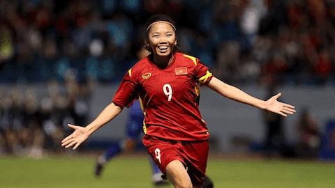

Huỳnh Như cô gái vàng của bóng đá Việt
T3, 29/06/2023, 00:00 (GMT+7)
Sáng nay (29/6), sau 1 ngày nghỉ ngơi khi di chuyển từ châu Âu về Việt Nam, thầy trò HLV Mai Đức Chung đã bước ngay vào buổi tập để chuẩn bị cho World Cup bóng đá nữ 2023 vì thời gian không còn nhiều. Đặc biệt, điều mọi người quan tâm nhất chính là chấn thương của Chương Thị Kiều và Huỳnh Như liệu có kịp hồi phục trước giải đấu lớn nhất hành tinh mà ĐT nữ Việt Nam lần đầu được góp mặt.
HLV Mai Đức Chung chia sẻ: “Chúng tôi phải rất thận trọng và giữ chân cho Kiều, vì chỉ cần sơ sẩy nhỏ sự cố lại có thể xảy ra. Kiều không thi đấu tại SEA Games 32. Còn trong chuyến tập huấn châu Âu vừa qua, tôi chỉ sử dụng Kiều khi đội đã ghi bàn và em chơi đúng 10 phút cuối ở trận giao hữu thắng CLB nữ Schott Mainz (Đức) với tỷ số 2-0. Việc tung Kiều vào sân để giúp em lấy lại cảm giác bóng. Ngày 22/7 tới, chúng ta sẽ thi đấu trận đầu tiên tại World Cup nữ gặp đương kim vô địch thế giới Mỹ. Trước lúc đó, hy vọng Kiều sẽ đạt phong độ 100%”.
Giới thiệu
Tin tức nổi bật